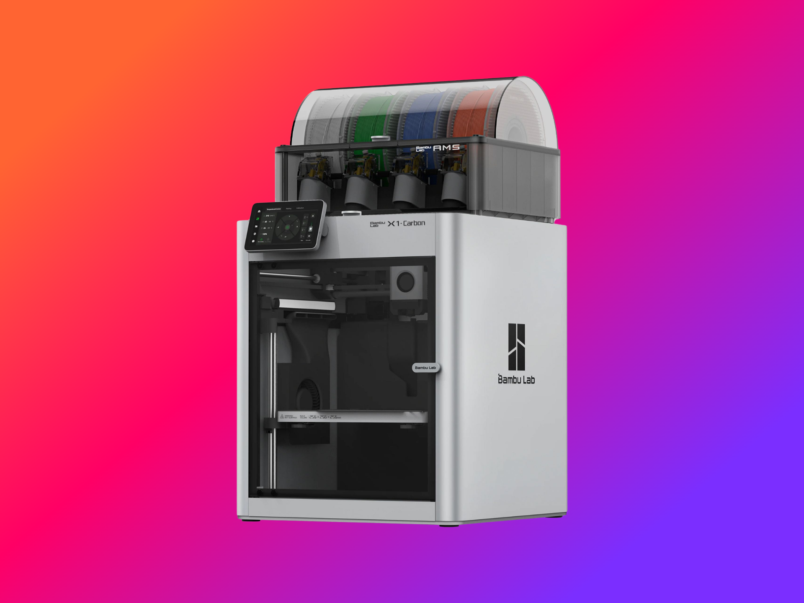
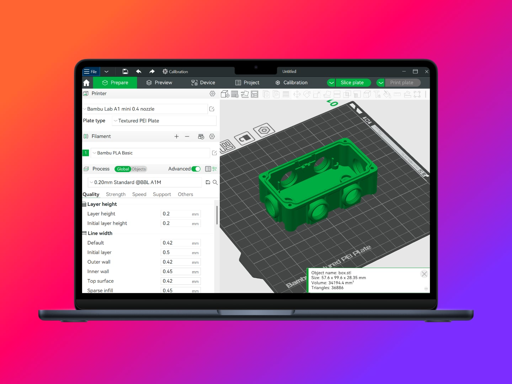

Introduction
Over the past few years, 3D printing has evolved from a futuristic concept to an accessible, everyday tool. What was once confined to research labs is now widely available, with cutting-edge printers costing less than £1,000 and software so intuitive that anyone with a computer and a mouse can use it. The barriers to entry have nearly vanished—making 3D printing a game-changer for manufacturing.

How 3D Printing Benefits Manufacturing
For manufacturing sites focused on improving OEE, reducing costs, minimising deviations, enhancing safety, and accelerating improvements, 3D printing offers immense potential.
1. Continuous Improvement at Speed
Continuous Improvement (CI) has long been a cornerstone of manufacturing, but the ability to create any tool or fixture in minutes for pennies is a revolutionary shift. Traditionally, Poka-Yoke tools and 5S shadow boards could take weeks to produce and cost thousands in materials alone—often making smaller improvements impractical.
With 3D printing, almost any improvement becomes feasible, with rapid prototyping enabling same-day implementation instead of waiting months.
2. Rapid Replacement of Obsolete Parts
If you’ve worked in manufacturing, you’ve likely encountered the frustration of needing a small plastic cog, clip, or housing, only to hear:
- “That’s obsolete now.”
- “We can’t supply that part individually—only as a full unit.”
The result? A £5,000+ bill for a replacement unit, 99% of which you don’t actually need.
With 3D printing, a 15-minute CAD design, 30-minute print, and 10p of plastic can produce a bespoke replacement part—restoring functionality in under an hour while saving thousands.
3. Reducing Stores Stock & Waste
Manufacturing sites maintain extensive spare parts inventories to minimise downtime, but this comes at a cost:
- Storage space & management complexity
- Obsolescence & waste (parts bought, stored for years, then discarded)
- Capital tied up in stock that may never be used
3D printing enables a digital inventory—storing CAD files instead of physical parts. Instead of stockpiling rarely used items, parts can be printed on demand, reducing costs and waste.
While 3D printing won’t replace all stores inventory (certain parts require specific materials or tolerances), it can significantly reduce reliance on low-use, non-critical stock—often printing parts faster than a trip to stores.
4. Cutting External Manufacturing Costs
Every manufacturing site relies on custom jigs, fixtures, and tool holders, often requiring external suppliers who charge £2,500+ per part and take weeks to deliver.
With in-house 3D printing, you can:
- Produce what you need, when you need it—at minimal cost
- Get parts faster and cheaper than outsourcing
- Retain designs, enabling easy replication across multiple lines or sites
For multi-site enterprises, sharing designs across locations unlocks additional efficiencies—turning one site’s innovation into a network-wide improvement.
Business illustrations by Storyset
5. Prototyping for Faster, Smarter Design
Not every application suits 3D printing—some environments require machined metal or milled PEEK due to temperature, chemical exposure, or sterility requirements. But before committing to expensive manufacturing methods, rapid 3D-printed prototypes allow for:
- Faster design iteration and testing
- Avoiding costly mistakes before final production
- Reduced material waste and shorter development cycles
This approach ensures that when high-spec parts must be outsourced, they are right the first time—saving both time and money.
6. Empowering Employees to Innovate at Speed
Beyond cost savings, 3D printing unlocks something even more valuable: rapid innovation at every level of the organisation.
A typical site improvement process involves:
- Raising an idea to management
- Building a business case for funding
- Vendor selection,
- Design, Prototyping, and Delivery
- Only then allowing for benefit to be seen
Many great ideas die before they begin because of the effort required—or employees fearing public failure.
With open access to 3D printing, employees can bring their ideas to life instantly. The worst-case scenario? Fail fast. The best case? Deliver fast. All whilst keeping cost minimal.

How to Implement 3D Printing Successfully
So, you’re convinced and ready to bring 3D printing to your site—but how do you ensure a smooth and impactful implementation?
Choose the Right Technology
Thanks to rapid advancements in consumer 3D printing, high-quality, reliable printers are now more affordable than ever. When starting out, prioritize printers that offer quick setup, low maintenance, and network connectivity to make usage as seamless as possible.
At the time of writing, Bambu Lab and Prusa printers stand out for their speed, precision, and affordability, However, the market is evolving fast, so always research the latest models before purchasing.
Build a Parts Database (Without Overcomplicating It)
Many sites delay adoption by waiting for the “perfect” parts management system—but you don’t need an expensive software solution on day one. The key is simply to store and organize designs from the start, so they can be easily reused later.
A shared fileshare, Teams site, or SharePoint folder is more than enough to get going. As 3D printing adoption grows, you can transition to a more structured system for managing digital inventory.
Avoid Red Tape—Let Innovation Thrive
One of the biggest mistakes companies make is over-restricting access to 3D printing. While having an owner to maintain the printers is important, gatekeeping the technology stifles creativity and slows innovation.
Yes, accidents will happen—someone will scratch a build plate or clog a nozzle—but considering replacement parts cost £15 or less, the trade-off is worth it. Keep a few spares on hand and focus on removing barriers so employees can innovate freely.
Similarly, avoid the bureaucracy of cross-charging materials to different teams. The administrative burden of tracking filament usage often costs more than the filament itself. Instead, treat materials as a shared resource to encourage open experimentation and rapid improvements.
Empower Everyone to Participate
Once the printers are up and running, make sure everyone knows they’re available. 3D printing is only as powerful as the ideas behind it, and the more people involved, the greater the impact.
As word spreads and adoption grows, you’ll quickly find that demand outpaces printer capacity—a great problem to have! This natural momentum will justify further investment in more printers and advanced capabilities.
Get Expert Support
Finally, don’t go it alone. Many companies specialize in 3D printing implementation and can help you select the right printers, materials, and software while sharing best practices from other industries.
A company I’ve personally worked with and highly recommend is 3DGBIRE. To be clear, this isn’t a paid endorsement—I just found their experience and support invaluable in setting up and scaling 3D printing successfully.
Conclusion
3D printing is no longer just a futuristic concept—it’s an essential tool for modern manufacturing sites. By integrating it into Continuous Improvement, stores stock management, prototyping, and in-house production, sites can reduce costs, improve response times, minimise downtime and enable grassroots innovation.
It would be great to hear from you guys on your thoughts on 3D printing.